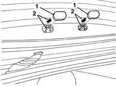
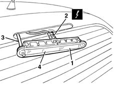

5550D16 third stop light - r+r
- Path
- Procedures > 55 ELECTRICAL EQUIPMENT > 5550 MANOEUVRING AND WARNING SIGNALS > 5550D brake and reversing lights > 5550D16 third stop light - r+r
- Kind
- repair procedure (removal / refitting; the operation number is the code)
- Applies to
- all engines; all production periods
- Interactive page
- https://sloeber94.github.io/elrnDB-lYpsln/en/#/2429431
Applies to: all engines; all production periods
 Removing
Removing
 Refitting
RefittingOpen the tailgate.
1. Prise up the rubber pads.
2. Press the tail-light retainers in the arrowed direction and release from the seat.

Applies to: all engines; all production periods
1. Working from outside the tail-gate, move the tail-light slightly.
2. Disconnect the electrical connection.
 | Name | Connector |
|---|---|---|
2 | Additional ("third brake light") |
3. Disconnect the washer jet pipe.
4. Recover the third brake light.

Applies to: all engines; all production periods
Refitting
RemovingCheck that the light cluster is not damaged.
Position the tail-light and connect the pipe.
Connect the electrical connection.
Fit the tail-light in its seat and do up the retainers.
Fit the protective rubber pads.
Test third brake light operation.